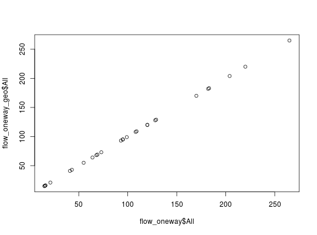
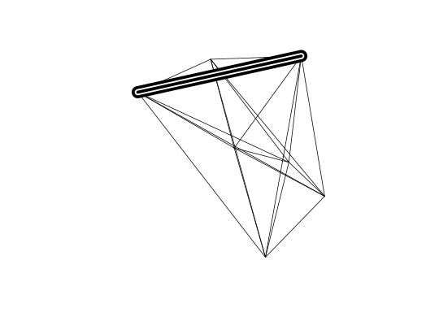

For example, sum total travel in both directions.
onewayid(x, attrib, id1 = names(x)[1], id2 = names(x)[2]) # S3 method for data.frame onewayid(x, attrib, id1 = names(x)[1], id2 = names(x)[2]) # S3 method for SpatialLines onewayid(x, attrib, id1 = names(x)[1], id2 = names(x)[2])
| x | A data frame or SpatialLinesDataFrame, representing an OD matrix |
|---|---|
| attrib | A vector of column numbers or names for deciding which attribute(s) of class numeric to aggregate |
| id1 | Optional (it is assumed to be the first column) text string referring to the name of the variable containing the unique id of the origin |
| id2 | Optional (it is assumed to be the second column) text string referring to the name of the variable containing the unique id of the destination |
onewayid outputs a data.frame with rows containing
results for the user-selected attribute values that have been aggregated.
Flow data often contains movement in two directions: from point A to point B
and then from B to A. This can be problematic for transport planning, because
the magnitude of flow along a route can be masked by flows the other direction.
If only the largest flow in either direction is captured in an analysis, for
example, the true extent of travel will by heavily under-estimated for
OD pairs which have similar amounts of travel in both directions.
Flows in both direction are often represented by overlapping lines with
identical geometries (see flowlines) which can be confusing
for users and are difficult to plot.
data(flow) flow_oneway = onewayid(flow, attrib = 3) nrow(flow_oneway) < nrow(flow) # result has fewer rows#> [1] TRUEsum(flow$All) == sum(flow_oneway$All) # but the same total flow#> [1] TRUE# using names instead of index for attribute onewayid(flow, attrib = "All")#> # A tibble: 28 x 4 #> Area.of.residence Area.of.workplace All is_two_way #> <chr> <chr> <int> <lgl> #> 1 E02002361 E02002361 109 FALSE #> 2 E02002361 E02002363 68 TRUE #> 3 E02002361 E02002367 15 TRUE #> 4 E02002361 E02002371 64 TRUE #> 5 E02002361 E02002377 55 TRUE #> 6 E02002361 E02002382 15 TRUE #> 7 E02002361 E02002393 108 TRUE #> 8 E02002363 E02002363 183 FALSE #> 9 E02002363 E02002367 95 TRUE #> 10 E02002363 E02002371 182 TRUE #> # ... with 18 more rows# using many attributes to aggregate attrib = which(vapply(flow, is.numeric, TRUE)) flow_oneway = onewayid(flow, attrib = attrib) colSums(flow_oneway[attrib]) == colSums(flow[attrib]) # test if the colSums are equal#> All Work.mainly.at.or.from.home #> TRUE TRUE #> Underground..metro..light.rail..tram Train #> TRUE TRUE #> Bus..minibus.or.coach Taxi #> TRUE TRUE #> Motorcycle..scooter.or.moped Driving.a.car.or.van #> TRUE TRUE #> Passenger.in.a.car.or.van Bicycle #> TRUE TRUE #> On.foot Other.method.of.travel.to.work #> TRUE TRUE# Demonstrate the results from onewayid and onewaygeo are identical flow_oneway_geo = onewaygeo(flowlines, attrib = attrib) plot(flow_oneway$All, flow_oneway_geo$All)# With spaces in id names names(flow)[1] = "Area of residence" onewayid(flow, attrib = 3)#> # A tibble: 28 x 4 #> `Area of residence` Area.of.workplace All is_two_way #> <chr> <chr> <int> <lgl> #> 1 E02002361 E02002361 109 FALSE #> 2 E02002361 E02002363 68 TRUE #> 3 E02002361 E02002367 15 TRUE #> 4 E02002361 E02002371 64 TRUE #> 5 E02002361 E02002377 55 TRUE #> 6 E02002361 E02002382 15 TRUE #> 7 E02002361 E02002393 108 TRUE #> 8 E02002363 E02002363 183 FALSE #> 9 E02002363 E02002367 95 TRUE #> 10 E02002363 E02002371 182 TRUE #> # ... with 18 more rows# with spatial data data(flowlines) fo <- onewayid(flowlines, attrib = "All") head(fo@data)#> # A tibble: 6 x 4 #> Area.of.residence Area.of.workplace All is_two_way #> <chr> <chr> <int> <lgl> #> 1 E02002361 E02002361 109 FALSE #> 2 E02002361 E02002363 68 TRUE #> 3 E02002361 E02002367 15 TRUE #> 4 E02002361 E02002371 64 TRUE #> 5 E02002361 E02002377 55 TRUE #> 6 E02002361 E02002382 15 TRUEplot(fo)sum(fo$All) == sum(flowlines$All)#> [1] TRUE# test results for one line n <- 3 plot(fo[n,], lwd = 20, add = TRUE)f_over_n <- rgeos::gEquals(fo[n,], flowlines["All"], byid = TRUE) sum(flowlines$All[f_over_n]) == sum(fo$All[n]) # check aggregation worked#> [1] TRUEplot(flowlines[which(f_over_n)[1],], add = TRUE, col = "white", lwd = 10)plot(flowlines[which(f_over_n)[2],], add = TRUE, lwd = 5)